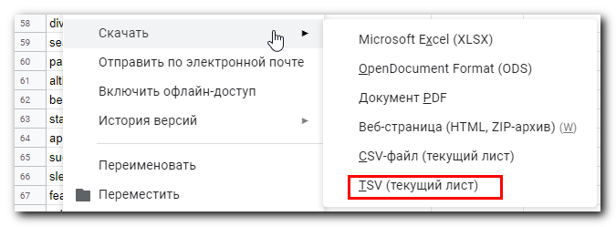

В статье расскажу о личном опыте запоминания английских слов с использованием замечательной программы с неочевидным интерфейсом Anki. Покажу, как не превратить в рутину создание новых карточек с озвучкой для запоминания.
Предполагается, что читатель уже имеет представление о методике интервального повторения и знаком с Anki. Но если не знаком – пора знакомиться.
Лень для айтишника – великая вещь: с одной стороны она заставляет избавляться от рутины посредством автоматизации, с другой – при большом количестве рутины лень побеждает, подавляя интерес к самообучению.
Как же не превратить в рутину процесс самостоятельного создания карточек для запоминания иностранных слов?
Вот мой рецепт:
Регистрация не хитрая, но она дает возможность использования Anki на разных устройствах. Я пользуюсь Android-версией Anki для запоминания и PC-версией для создания новых карточек. Можно и не устанавливать приложение на смартфон, потому что заучивать карточки можно прямо на сайте под своим аккаунтом.
Адрес сайта: https://ankiweb.net/
Качаем и устанавливаем Anki для PC. На момент написания статьи последней версией является 2.1.
Далее:
Теперь прогресс обучения будет синхронизироваться с AnkiWeb.
AwesomeTTS – это просто отличный плагин, позволяющий для конкретного выражения на иностранном языке получить его произношение и прикрепить к карточке.
Итак:
Пользуемся методом “корректорского зрения” для быстрого извлечения непонятных слов из иностранного текста с целью их запоминания.
Суть метода:
Может быть метод как-то и называется по-другому (в комментариях подскажите), но думаю суть ясна.
Здесь все очевидно: копипастим слово в соответствующее поле переводчика и выбираем подходящий для контекста перевод.
В некоторых случаях заглядываю в мультитран, чтобы узнать варианты перевода и использования в разных контекстах.
Перевод заносим в гугл-таблицу. Вот пример наполнения:
Теперь сохраняем таблицу в TSV: Файл → Скачать → TSV

Этот файл нужно импортировать в колоду Anki.
Запускаем Anki, File → Import. Выбираем файл. Загружаем в колоду Default со следующими настройками:
У меня колода Default всегда содержит новые слова, к которым я еще не добавил озвучку.
Google Cloud Text-to-speech – это специализированный сервис, позволяющий качественно перевести текст в речевой вариант. Чтобы его использовать в Anki, нужно сгенерировать либо свой API ключ, либо тот, который предлагает автор плагина AwesomeTTS в документации (см. раздел API KEY).
В Anki кликаем по Browse, выбираем колоду Default, выделяем все импортированные карточки и выбираем из меню AwesomeTTS → Add audio to selected…
В появившемся окне выбираем сохраненный ранее профиль с сервисом Google Text-to-speech. Проверяем, что источник для озвучки и поле для вставки озвучки равны Front, и нажимаем Generate:
Если карточка содержит элементы, которые озвучивать не нужно, то придется по очереди обработать каждую карточку выделив в ней слова для озвучки:
После озвучки я перемещаю эти карточки в колоду, которую буду заучивать, оставляя колоду Default пустой для новых слов.
Я использую Anki на PC для создания и группировки карточек по темам, т.к. это наиболее удобно делать именно в этой версии.
Заучиваю карточки в приложении для Android.
Выше я уже показал, как настроить синхронизацию Anki для PC с AnkiWeb.
После установки приложения для Android настройка синхронизации происходит еще проще.
Иногда в программе случаются конфликты синхронизации. Например, вы поменяли одну и ту же карточку на разных устройствах, или из-за сбоев синхронизации. В этом случае приложение выдаст предупреждение, какой источник взять за основу для синхронизации: либо AnkiWeb, либо приложение – здесь главное не ошибиться, а то могут стереться данные о прогрессе обучения и внесенные изменения.